기계설계산업기사 (2012-03-04 기출문제)
1과목: 기계가공법 및 안전관리
1. 드릴의 날끝각이 118° 로 되어 있으면서도 날끝의 좌우길이가 다르다면 날끝의 좌우길이가 같을 때보다 가공후의 구멍치수 변화는?
- 더 커진다.
- 변함없다.
- 타원형이 된다.
- 더 작아진다.
(정답률: 74%)

2. 연삭숫돌에서 눈메움 현상의 발생 원인이 아닌 것은?
- 숫돌의 원주 속도가 느린 경우
- 숫돌의 입자가 너무 큰 경우
- 연삭 깊이가 큰 경우
- 조직이 너무 치밀한 경우
(정답률: 51%)
3. 보통선반작업시의 안전사항으로 올바른 것은?
- 칩에 의한 상처를 방지하기 위해 소매가 긴 작업복과 장갑을 끼도록 한다.
- 칩이 공작물에 걸려 회전할 때는 즉시 기계를 정시시키고 칩을 제거한다.
- 거친 절삭일 경우는 회전 중에 측정한다.
- 측정 공구는 주축대 위나 베드 위에 놓고 사용한다.
(정답률: 74%)
4. 전기스위치를 취급할 때 틀린 것은?
- 정전시에는 반드시 끈다.
- 스위치가 습한 곳에 설비되지 않도록 한다.
- 기계운전시 작업자에게 연락 후 시동한다.
- 스위치를 뺄 때는 부하를 크게 한다.
(정답률: 90%)
5. 다음은 정밀입자 가공을 나타낸 것이다. 이에 속하지 않는 것은?
- 슈퍼피니싱
- 배럴가공
- 호닝
- 래핑
(정답률: 67%)
6. 시준기와 망원경을 조합한 것으로 미소 각도를 측정할 수 있는 광학적 각도 측정기는?
- 베벨 각도기
- 오토 콜리메이터
- 광학식 각도기
- 광학식 클리노미터
(정답률: 61%)
7. 기어가공에서 창성에 의한 절삭법이 아닌 것은?
- 형판에 의한 방법
- 래크 커터에 의한 방법
- 호브에 의한 방법
- 피니언 커터에 의한 방법
(정답률: 66%)
8. 텔레 스코핑 게이지로 측정할 수 있는 것은?
- 진원도 측정
- 안지름 측정
- 높이 측정
- 깊이 측정
(정답률: 56%)
9. 밀링 머신에 사용되는 부속장치가 아닌 것은?
- 아버
- 어댑터
- 바이스
- 방진구
(정답률: 74%)
10. 다음 나사산의 각도측정 방법으로 틀린 것은?
- 공구 현미경에 의한 방법
- 나사 마이크로미터에 의한 방법
- 투영기에 의한 방법
- 만능 측정현미경에 의한 방법
(정답률: 48%)
11. 초경합금의 사용선택 기준을 표시하는 내용 중 ISO 규격에 해당되지 않는 공구는?
- M계열
- N계열
- K계열
- P계열
(정답률: 50%)
12. 다음 연삭숫돌의 입자 중 주철이나 칠드주물과 같이 경하고 취성이 많은 재료의 연삭에 적합한 것은?
- A 입자
- B 입자
- WA 입자
- C 입자
(정답률: 46%)
13. 선반의 나사절삭 작업시 나사의 각도를 정확히 맞추기 위하여 사용되는 것은?
- 플러그 게이지
- 나사 피치 게이지
- 한계 게이지
- 센터 게이지
(정답률: 49%)
14. 1인치에 4산의 리드스크루를 가진 선반으로 피치 4mm의 나사를 깎고자 할 때, 변환 기어 이수를 구하면? (단, A는 주축기어의 이수, B는 리드스크루의 이수이다.)
- A:80, B:137
- A:120, B:127
- A:40, B:127
- A:80, B:127
(정답률: 45%)
15. 테이블의 이동거리가 전후 300mm, 좌우 850mm, 상하 450mm인 니형 밀링머신의 호칭번호로 옳은 것은?
- 1호
- 2호
- 3호
- 4호
(정답률: 60%)
16. 스패너 작업시 안전사항으로 옳은 것은?
- 너트의 머리치수보다 약간 큰 스패너를 사용한다.
- 꼭 조일 때는 스패너 자루에 파이프를 끼워 사용한다.
- 고정 조(jaw)에 힘이 많이 걸리는 방향에서 사용한다.
- 너트를 조일 때는 스패너를 깊게 물려서 약간씩 미는 식으로 조인다.
(정답률: 56%)
17. 밀링분할대로 3° 의 각도를 분할하는데, 분할 핸들을 어떻게 조작하면 되는가? (단, 브라운 샤프형 No.1의 18열을 사용한다.)
- 5구멍씩 이동
- 6구멍씩 이동
- 7구멍씩 이동
- 8구멍씩 이동
(정답률: 71%)
18. 보통 선반에서 테이퍼나사를 가공하고자 할 때 절삭방법으로 틀린 것은?
- 바이트의 높이는 공작물의 중심선보다 높게 설치하는 것이 편리하다.
- 심압대를 편위시켜 절삭하면 편리하다
- 테이퍼 절삭장치를 사용하면 편리하다.
- 바이트는 테이퍼부에 직각이 되도록 고정한다.
(정답률: 63%)
19. 절삭유제에 관한 설명으로 틀린 것은?
- 극압유는 절삭공구가 고온, 고압상태에서 마찰을 받을 때 사용한다.
- 수용성 절삭유제는 점성이 낮으며, 윤활작용은 좋으나 냉각작용이 좋지 못하다.
- 절삭유제는 수용성과 불수용성, 그리고 고체윤활제로 분류한다.
- 불수용성 절삭유제는 광물성인 등유, 경유, 스핀들유, 기계유 등이 있으며 그대로 또는 혼합하여 사용한다.
(정답률: 69%)
20. CNC 공작기계 서보기구의 제어방식에서 틀린 것은?
- 단일회로
- 개방회로
- 폐쇄회로
- 반 폐쇄회로
(정답률: 64%)
2과목: 기계제도
21. 물품의 일부를 파단한 곳을 표시하는 선 또는 끊어낸 부분을 표시하는 선으로 불규칙한 파형의 가는 실선은?
- 절단선
- 파단선
- 해칭선
- 파선
(정답률: 81%)
22. 아래 그림의 평면도 우측면도에 가장 적합한 정면도는?
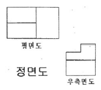
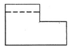
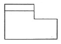
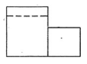
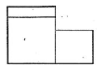
(정답률: 65%)
23. 그림과 같이 우측의 입체도를 3각법으로 정투상한 도면(정면도, 평면도, 우측면도)에 대한 설명으로 옳은 것은?
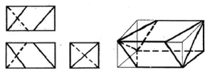
- 정면도만 틀림
- 평면도만 틀림
- 우측면도만 틀림
- 모두 맞음
(정답률: 76%)
24. 다음 그림에서 지시선에 기입된 12-7 드릴과 2-3 드릴은 무엇을 뜻하는가?
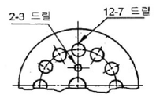
- 지름 7mm의 구멍 12개와 지름 3mm의 구멍 2개를 각각 드릴로 뚫는다.
- 지름 12mm의 구멍 7개와 지름 2mm의 구멍 3개를 각각 드릴로 뚫는다.
- 지름 12mm 깊이 7mm 의 구멍과, 지름 2mm 깊이 3mm의 구멍을 1개씩 각각 뚫는다.
- 지름 12mm의 구멍을 7mm 간격으로, 지름 2mm의 구멍을 수평중심선을 대칭으로 하여 3mm 간격으로 뚫는다.
(정답률: 79%)
25. 다음 중 가상선을 사용하는 경우에 해당하지 않는 것은?
- 도시된 단면의 앞쪽에 있는 부분을 나타내는 경우
- 되풀이하는 것을 나타내는 경우
- 가공 전 또는 가공 후의 모양을 나타내는 경우
- 위치 결정의 근거가 된다는 것을 명시하는 기준선을 타나내는 경우
(정답률: 49%)
26. 그림과 같은 KS 용접 도시기호에 가장 적합한 용 접부의 실제 모양은?
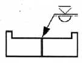
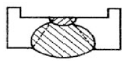
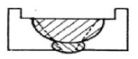
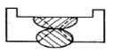
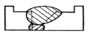
(정답률: 72%)
27. 최대 허용 치수 50.007mm, 최소 허용 치수 49.982mm, 기준치수 50.000mm일 때 위 치수 허용차, 아래 치수 허용차는? (순서대로 (위 치수 허용차) (아래 치수 허용차))
- + 0.007mm - 0.018mm
- - 0.007mm + 0.018mm
- - 0.025mm + 0.007mm
- + 0.025mm - 0.018mm
(정답률: 85%)
28. 표면의 곁을 도시할 때 제거가공을 허용하지 않는 다는 것을 지시하는 기호는?
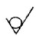
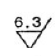
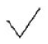
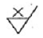
(정답률: 80%)
29. <그림>과 같이 두 원기둥이 만나는 상관체의 정투상도에서 상관선은 어느 것인가?
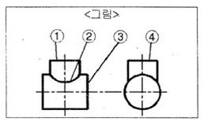
- ①
- ②
- ③
- ④
(정답률: 82%)
30. 그림과 같이 핸들이나 바퀴 등의 암 및 림, 리브, 훅, 축, 구조물의 부재 등을 타나낼 때에 사용할 수 있는 단면도는?
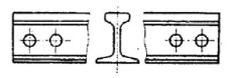
- 온 단면도
- 한쪽 단면도
- 계단 단면도
- 회전도시 단면도
(정답률: 81%)
31. 나사가 “M50×2-6H" 로 표시되었을 때 이 나사에 대한 설명 중 틀린 것은??
- 미터 가는 나사이다.
- 왼 나사이다.
- 피치 2mm이다.
- 암나사 등급 6 이다.
(정답률: 84%)
32. 기준치수가 ø50인 구멍기준식 끼워 맞춤에서 구멍과 축의 공차 값이 다음과 같을 때 틀린 것은?
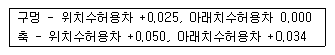
- 최소 틈새는 0.009 이다.
- 최대 죔새는 0.⑤0 이다.
- 축의 최소 허용치수는 50.034이다.
- 구멍과 축의 조립 상태는 억지 끼워 맞춤 이다.
(정답률: 74%)
33. KS 재료기호 “SM 10C"에서 10C는 무엇을 의미하는가?
- 최저 인장강도
- 탄소 함유량
- 제작 방법
- 종별 번호
(정답률: 79%)
34. 나사의 종류를 표시하는 기호 중 미터 사다리꼴 나사의 기호는?
- M
- SM
- TM
- Tr
(정답률: 67%)
35. 그림과 같은 도면의 기하공차 설명으로 가장 적합한 것은?
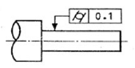
- 대상으로 하고 있는 원통의 축선은 ø0.1mm의 원통안에 있어야 한다.
- 대상으로 하고 있는 면은 0.1mm 만큼 떨어진 두개의 동축 원통면 사이에 있어야 한다.
- 대상으로 하고 있는 원통의 축선은 0.1mm 만큼 떨어진 두 개의 평행한 평면 사이에 있어야 한다.
- 대상으로 하고 있는 면은 0.1mm 만큼 떨어진 두개의 평행한 평면 사이에 있어야 한다.
(정답률: 54%)
36. 그림과 같은 정면도가 투상될 수 없는 평면도는?
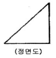
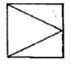
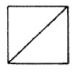
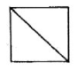
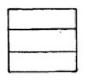
(정답률: 67%)
37. 나사의 도시법을 설명한 것으로 틀린 것은?(오류 신고가 접수된 문제입니다. 반드시 정답과 해설을 확인하시기 바랍니다.)
- 수나사의 바깥지름과 암나사의 골지름은 굵은 실선으로 표시한다.
- 완전 나사부의 및 불완전 나사부의 경계선은 굵은 실선으로 표시한다.
- 보이지 않는 나사부분은 가는 파선으로 표시한다.
- 수나사 및 암나사의 조립 부분은 수나사 기준으로 표시한다.
(정답률: 57%)
38. 그림과 같은 물체를 제3각법으로 투상하여 정면 도, 평면도, 우측면도로 나타냈을 때 가장 적합한 것은?
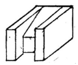
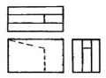
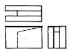
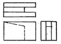
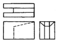
(정답률: 63%)
39. 기어의 부품도는 그림과 병용하여 항목표를 작성하는데 표준 스퍼 기어와 헬리컬 기어 항목표에 모두 기입하는 것은?
- 리드
- 비틀림 방향
- 비틀림 각
- 기준 래크 압력각
(정답률: 53%)
40. 그림과 같은 부등변 형강의 치수 표시 기호로 옳은 것은?
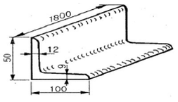
- L 1800-50×100×9×12
- L 1800-50×100×12×9
- L 50×100×9×12-1800
- L 50×100×12×9-1800
(정답률: 71%)
3과목: 기계설계 및 기계재료
41. 다음 중 뜨임의 목적이 아닌 것은?
- 탄화물의 고용강화
- 인성 부여
- 담금질 후 응력 제거
- 내마모성의 향상
(정답률: 61%)
42. 마그네슘(Mg)에 대한 설명으로 틀린 것은?
- 비중은 상온에서 1.74 이다.
- 열전도율과 전기전도율은 Cu, Al보다 낮다.
- 해수에 대해 내식성이 풍부하다.
- 절삭성이 우수하다.
(정답률: 64%)
43. 단일금속의 결정에 비해 고용체 상태에 있는 금속의 기계적 성질의 변화를 나타낸 것 중 틀린 것은?
- 변형증가
- 연성증가
- 강도증가
- 탄성계수증가
(정답률: 37%)
44. Fe-C 평형상태도에서 공석강의 탄소 함유량은 얼마정도인가?
- 6.67%
- 4.3%
- 2.11%
- 0.77%
(정답률: 50%)
45. 오일리스 베어링(oilless bearing)의 특징을 설명한 것으로 틀린 것은?
- 다공질이므로 강인성이 높다.
- 기름 보급이 곤란한 곳에 적당하다.
- 너무 큰 하중이나 고속 회전부에는 부적당하다.
- 대부분 분말 야금법으로 제조한다.
(정답률: 55%)
46. 공구재료로써 구비해야 할 조건들 중 틀린 것은?
- 내마멸성과 강인성이 클 것
- 가열에 의한 경도 변화가 클 것
- 상온 및 고온에서 경도가 높을 것
- 열처리와 공작이 용이 할 것
(정답률: 80%)
47. 섬유강화 복합재료의 일반적인 성질이 아닌 것은?
- 높은 강도와 강성
- 높은 감쇄 특성
- 높은 열팽창계수
- 이방성
(정답률: 45%)
48. 금속재료가 일정한 온도 영역과 변형속도의 영역에서 유리질처럼 늘어나는 특수한 현상은?
- 형상기억
- 초소성
- 초탄성
- 초전도
(정답률: 66%)
49. 순철의 성질을 설명한 것으로 틀린 것은?
- 융점은 1539℃ 정도이다.
- 비중은 7.86 정도이다.
- 인장강도가 20~28 kgf/mm2이다.
- 연신율은 12~14%이다.
(정답률: 46%)
50. 탄소강에서 적열메짐을 방지하고, 주조성과 담금질 효과를 향상시키기 위하여 첨가하는 원소는?
- 황(S)
- 인(P)
- 규소(Si)
- 망간(Mn)
(정답률: 64%)
51. M22볼트(골지름 19.294mm)가 그림과 같이 2장의 강판을 고정하고 있다. 체결 볼트의 허용전단응력이 39.25MPa라 하면 최대 몇 kN까지의 하중을 받을 수 있는가?
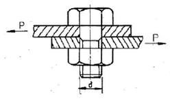
- 3.21
- 7.54
- 11.48
- 22.96
(정답률: 47%)
52. 중공축의 안지름과 바깥지름의 비를 x(<1)라 할 때, 동일한 비틀림 모멘트에 대해서 동일한 비틀림 응력이 발생하기 위한 중실축 지름(d)과 중곡축의 바깥지름(d2)의 비 d2/d는? (단, 중실축과 중공축의 재질은 같다.)
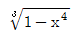
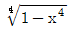
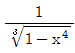
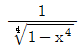
(정답률: 49%)
53. 그림과 같은 스프링 장치에서 W = 150 N의 하중을 매달면 처짐은 몇 cm 가 되는가? (단, 스프링 상수 k1 = 20N/cm, k2 = 40N/cm 이다.)
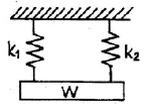
- 1.25
- 2.50
- 5.68
- 11.25
(정답률: 64%)
54. 800rpm으로 회전하고 1kN의 하중을 받고 있는 단열 레이디얼 볼베어링의 수명이 20000시간이라 하면, 다음 중 어느 베어링을 사용하는 것이 가장 적당한가? (단, C는 기본 동정격하중이다.)
- 6202 (C = 6kN)
- 6203 (C = 8kN)
- 62⑤ (C = 10 kN)
- 6206 (C = 15 kN)
(정답률: 49%)
55. 단식 블록 브레이크에서 브레이크 드럼의 지름이 450mm, 블록을 브레이크 드럼에 밀어 붙이는 힘이 1.96kN인 경우 브레이크 드럼에 작용하는 제동 토크는 몇 N ㆍ m 인가? (단, 마찰계수는 0.2이다.)
- 52.4
- 88.2
- 176.4
- 441.0
(정답률: 38%)
56. 압력각이 20° 인 표준 스퍼기어에서 언더컷을 방지하기 위한 이론적인 최소 잇수는 몇 개 인가?
- 17
- 25
- 30
- 32
(정답률: 43%)
57. 인장 하중과 압축 하중이 교대로 반복하여 작용하는 하중으로 크기와 방향이 동시에 변화하는 하중은?
- 반복하중
- 교번하중
- 충격하중
- 전단하중
(정답률: 74%)
58. 다음 중 다른 전동방식과 비교하여 체인전동방식의 일반적인 특징에 해당하지 않는 것은?
- 미끄럼이 없는 일정한 속도비를 얻을 수 있다.
- 초장력이 필요 없으므로 베어링의 마멸이 적다.
- 고속회전에 적당하다.
- 전동 효율이 95% 이상으로 좋다.
(정답률: 54%)
59. 직경 500mm인 마찰차가 350rpm의 회전수로 동력을 전달한다. 이 때 바퀴를 밀어붙이는 힘이 1.96kN일 때 몇 kW의 동력을 전달할 수 있는가? (단, 접촉부 마찰계수는 0.35로 하고, 미끌림은 없다고 가정한다.)
- 4.5
- 5.1
- 5.7
- 6.3
(정답률: 28%)
60. 판의 두께 12mm, 리벳의 지름 19mm, 피치50mm 인 1줄 겹치기 리벳 이음을 하고자 한다. 한 피치 당 12.26kN의 하중이 작용할 때 생기는 인장응력과 리벳이음의 판의 효율은 각각 얼마인가?
- 32.96MPa, 76%
- 32.96MPa, 62%
- 16.95MPa, 76%
- 16.98MPa, 62%
(정답률: 48%)
4과목: 컴퓨터응용설계
61. 이미 정의된 두 개 이상의 곡면을 부드럽게 연결 되게 하는 곡면 처리를 무엇이라 하는가?
- 블랜딩(blending)
- 셰이딩(shading)
- 스키닝(skinning)
- 리드로잉(redrawing)
(정답률: 81%)
62. 그림과 같이 2개의 경계곡선(위 그림)에 의해서 하나의 곡면(아래 그림)을 구성하는 기능을 무엇이라고 하는가?
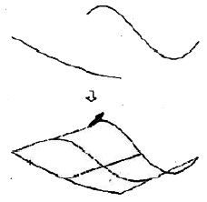
- revolution
- twist
- loft
- extrude
(정답률: 72%)
63. 솔리드 모델링에서 토폴로지 요소간에는 오일러-포앙카레 공식이 만족해야 하는데, 이 식으로 옳은 것은? (단, u는 꼭지점의 개수, e는 모서리 개수, f는 면 혹은 외부 루프의 개수, h는 면상에 구멍 로프의 개수, s는 독립된 셀의 개수, p는 입체를 관통하는 구멍의 개수이다.)
- u + e - f - h = 3(s - p)
- u + e - f - h = 2(s - p)
- u - e + f - h = 3(s - p)
- u - e + f - h = 2(s - p)
(정답률: 37%)
64. 동차좌료를 이용하여 2차원 좌표를 p=[x, y, 1]으로 표현하고, 동차변환 매트릭스 연산을 P' = pT 로 표현할 때 다음 변환 매트릭스의 설명으로 옳은 것은?
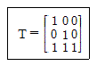
- x축으로 1만큼 이동
- y축으로 1만큼 이동
- x축으로 1만큼, y축으로 1만큼 이동
- x축으로 2만큼, y축으로 2만큼 이동
(정답률: 70%)
65. CAD 관련 용어 중 요구된 색상의 사용이 불가능 할 때 다른 색상들을 섞어서 비슷한 색상을 내기 위해 컴퓨터 프로그램에 의해 시도되는 것을 의미하는 것은?
- 플리커(flicker)
- 디더링(dithering)
- 새도우 마스크(shadow mask)
- 라운딩(rounding)
(정답률: 62%)
66. 그림과 같이 곡면 모델링 시스템에 의해 만들어진 곡면을 불러들여 기존 모델의 평면을 바꿀 수 있는데, 이를 무엇이라고 하나?
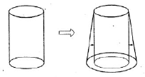
- 네스팅(nesting)
- 트위킹(tweaking)
- 돌출하기(extruding)
- 스위핑(sweeping)
(정답률: 68%)
67. 2차원상의 한 점 P=[x, y, 1]을 x 축 방향으로 전단(shear) 변환하여 P'=[x ', y, 1]이 되기 위한 3x3 동차변환행렬(T)로 옳은 것은?(단, P'=PT 이고, a는 상수이다.)
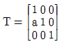
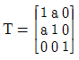
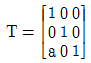
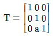
(정답률: 33%)
68. CAD의 디스플레이 기능 중 줌(ZOOM) 기능을 사용 시 화면에서 나타나는 현상으로 맞는 것은?
- 도형 요소의 치수가 변화한다.
- 도형 형상이 반대로 나타난다.
- 도형 요소가 시각적으로 확대, 축소 되어진다.
- 도형 요소가 회전한다.
(정답률: 83%)
69. 그래픽 장치 중 하나인 래스터(raster) 그래픽 장치에 관한 설명으로 틀린 것은?
- 래스터 그래픽 장치는 TV 기술의 발달과 함께 1970년대 중반에 출연하였다.
- 디스플레이 프로세서가 응용 프로그램으로부터 그래픽 명령을 받아 그것을 래스터 이미지로 변환한 다음 프레임 버퍼 메모리에 저장한다.
- 그림의 복잡성에 따라 리프레쉬에 소요되는 시간이 가변적이다.
- 화소(pixels)의 크기가 해상도를 결정한다.
(정답률: 46%)
70. 솔리드 모델링에서 모델을 구현하는 자료구조가 몇 가지 있는데, 복셀 표현(voxel representation)은 어느 자료구조에 속하는가?
- CGS 트리구조
- B-rep 자료구조
- 날개 모서리(winged-edge) 자료구조
- 분해모델을 저장하는 자료구조
(정답률: 52%)
71. 기본 입체에 적용한 불리안(Boolean) 연산 과정을 트리구조로 저장하는 CSG(Constructive Solid Geometry) 구조에 대한 설명으로 틀린 것은?
- 자료 구조가 간단하고 데이터의 양이 적어 데이터의 관리가 용이하다.
- 내부와 외부가 분명하게 구분되지 않는 입체라도 구현이 가능하다.
- 항상 대응되는 B-rep 모델로 치환 가능하다.
- 파라메트릭(Parametric) 모델링의 구현이 쉽다.
(정답률: 52%)
72. 다음 모델링 기법 중에서 숨은선 제거가 불가능한 모델링 기법은?
- CSG 모델링
- B-rep 모델링
- wire Frame 모델링
- Surface 모델링
(정답률: 78%)
73. 다음 중 숨은선 또는 숨은면을 제거하기 위한 방법에 속하지 않는 것은?
- x-버퍼에 의한 방법
- z-버퍼에 의한 방법
- 후방향 제거 알고리즘
- 깊이 분류 알고리즘
(정답률: 58%)
74. 네 개의 경계곡선을 선형 보간하여 얻어지는 곡면은?
- 선형 곡면
- 쿤스 곡면
- Bezier 곡면
- 그리드 곡면
(정답률: 69%)
75. 다음 그림에서 점 P의 극좌표 갑이 r=10, θ =30° 일 때 이것을 직교 좌표계로 변환한 P(x,y)를 구하면?
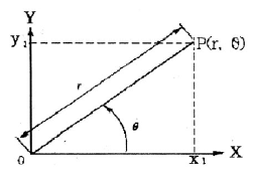
- P(8.66, 4.21)
- P(8.66, 5)
- P(5,8.66)
- P(4.21, 8.66)
(정답률: 57%)
76. CAD 모델링 방법 중 형상 구속 조건과 치수 조건을 이용하여 형태를 모델링 하는 방식은?
- Feature-based modeling
- Parametric modeling
- Hybrid modeling
- Assembly modeling
(정답률: 66%)
77. 공항에서 컴퓨터를 이용한 해석방법 중 가장 널리 사용되는 방법으로 응력, 변형, 열전달, 유체유동 및 기타 연속체의 해석에 이용되는 방법은?
- FEM(finite element method)
- MAM(modal analysis method)
- FBA(feature based analysis)
- GMA(geometry modeling analysis)
(정답률: 57%)
78. 일반적인 B-Spline 곡선의 특징을 설명한 것으로 틀린 것은?
- 곡선의 차수는 조정점의 개수와 무관하다.
- 곡선의 형상을 국부적으로 수정할 수 있다.
- 원, 타원, 포물선과 같은 원추곡선을 정확하게 표현할 수 있다.
- 첫 번째 조정점과 마지막 조정점은 반드시 통과한다.
(정답률: 46%)
79. CAD 데이터의 교환 표준 중 하나로 국제표준화기구(ISO)가 국제표준으로 지정하고 있으며, CAD의 형상 데이터뿐만 아니라 NC 데이터나 부품표, 재료 등도 표준 대상이 되는 규격은?
- IGES
- DXF
- STEP
- GKS
(정답률: 55%)
80. DXF(Data Exchange File) 파일의 섹션 구성에 해당 되지 않는 것은?
- header section
- library section
- tables section
- entities section
(정답률: 57%)